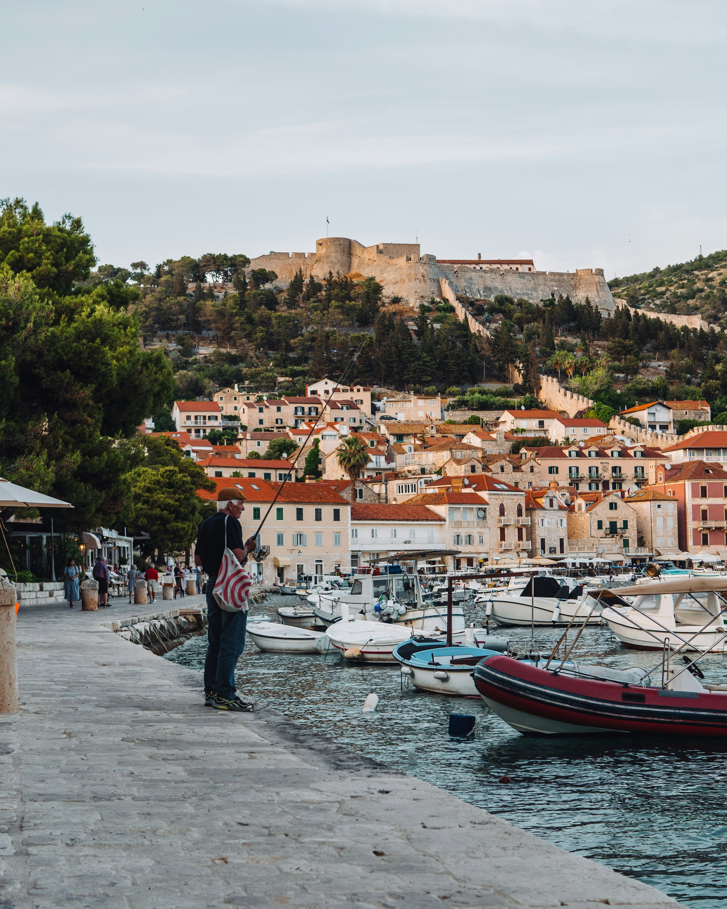
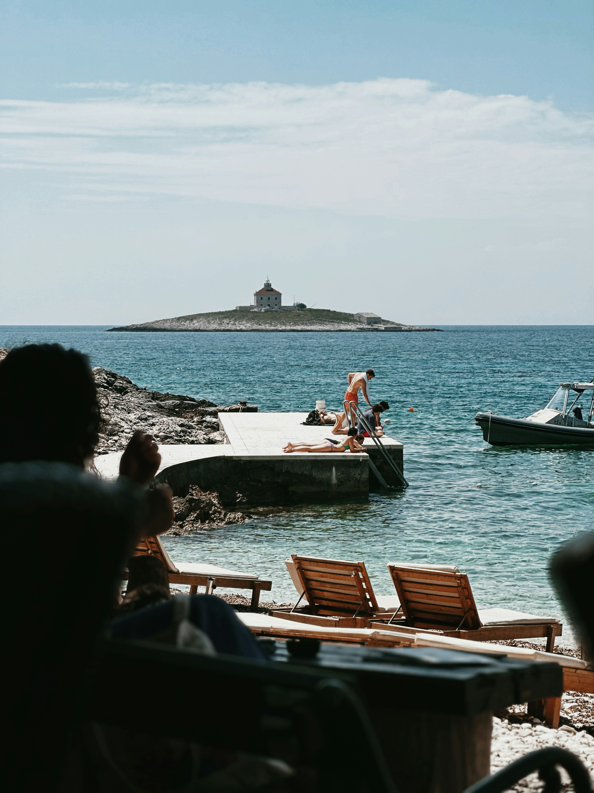

Experience the captivating allure of Krk Island, Croatia's premier vacation hotspot! Step back in time as you wander through medieval castles and picturesque villages. Relax on sun-drenched beaches and dive into azure waters alive with vibrant marine life. Embark on exhilarating outdoor activities like sailing and snorkeling along the stunning coastline. And don't forget to tantalize your taste buds with fresh seafood delicacies and world-class local wines. Your unforgettable getaway begins on Krk Island – where every moment is filled with endless possibilities!
Top 3 Beaches to Explore in Krk
Krk Island a perfect summer destination
Choosing a destination for summer vacation can be challenging and tiresome work, but we suggest considering Krk as your next destination. Krk offers good traffic connections with the mainland, making it easily accessible by bridge, boat, or ferry. Its excellent maritime connections also allow for visiting other nearby islands. Additionally, Krk boasts a Mediterranean climate, crystal-clear sea, and numerous Blue flag beaches, making it an attractive destination for tourists.
